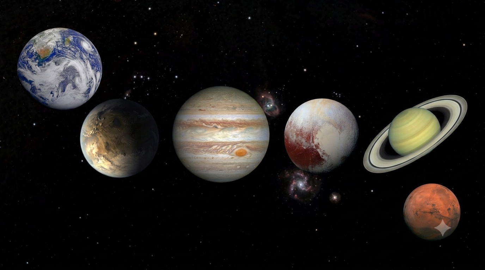
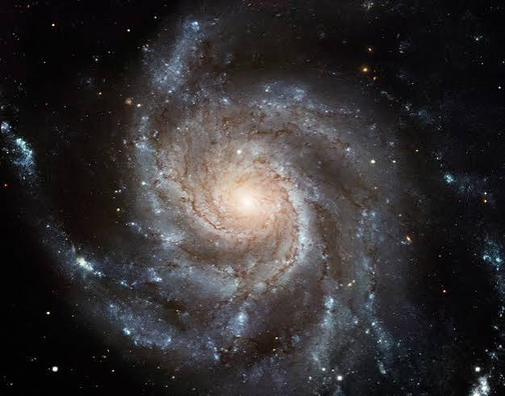
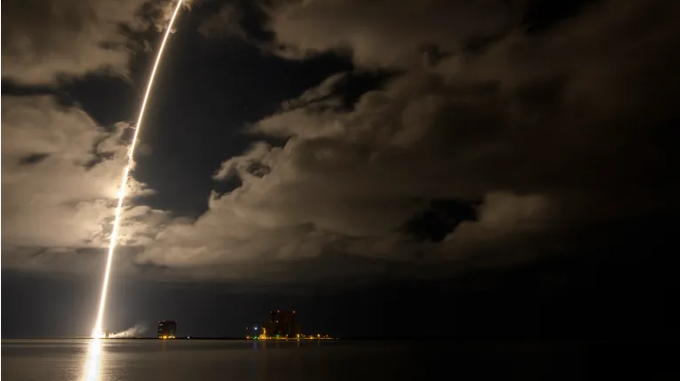
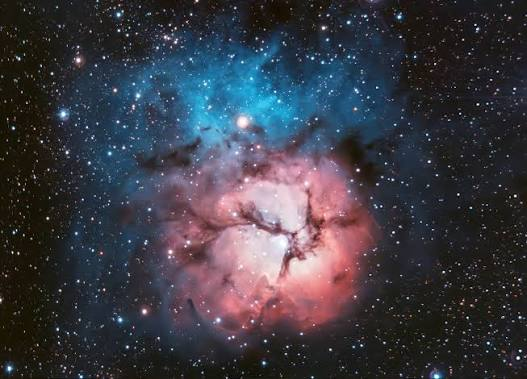
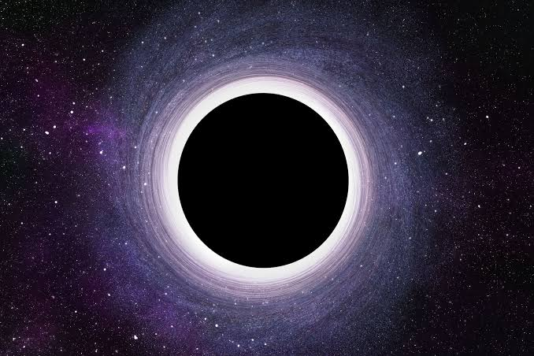
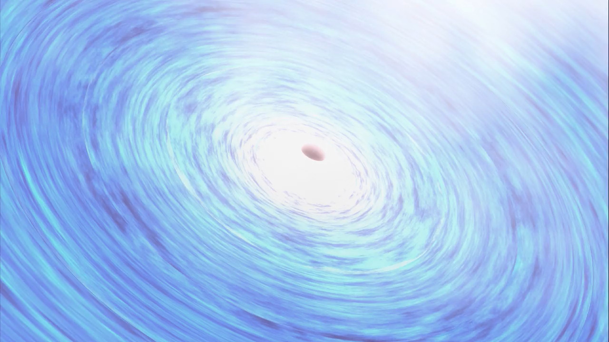

Worlds in our own backyard
From scorched Mercury to the icy giants at the edge of the solar system, planets are where rock, gas, and gravity settle into something we can actually picture. See how eight very different worlds came from the same swirl of dust.
The furnaces that light the sky
Every star is a battle between gravity pulling in and fusion pushing out. That balance decides how bright a star burns, how long it lives, and how it will eventually die.


Islands of stars adrift in space
From modest collections of a few thousand stars to sprawling giants spanning a million light-years, galaxies are the universe's way of organizing itself, gravity binding stars, gas, and dust into cities of light.
Humanity's reach beyond Earth
From the earliest, faltering attempts to leave Earth orbit to today's spacecraft exploring distant worlds, every mission builds on the failures and triumphs that came before it.


Clouds where stars are born and die
Vast drifts of gas and dust, nebulae mark both the beginning and end of a star's life, sometimes cradling new suns, sometimes scattering the remains of old ones across space.
Where gravity wins completely
Not holes at all but concentrations of matter so dense that not even light can escape their pull, black holes remain one of the universe's most extreme and least understood phenomena.


Galaxies with a hidden engine
At the heart of some galaxies lies a supermassive black hole actively feeding, blasting out jets and radiation across the entire electromagnetic spectrum, visible proof of gravity's power at galactic scale.